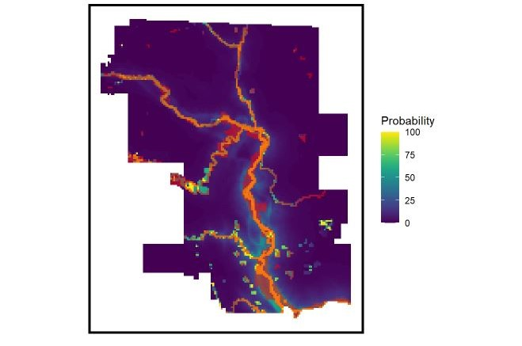
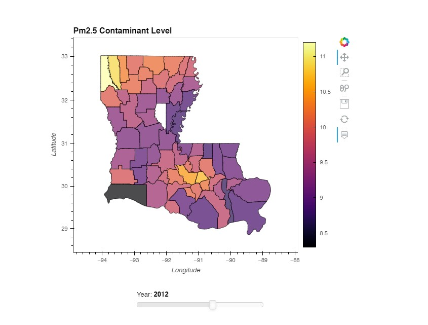

My Projects
Spatial Data Analytics
Historic road conditions data and the city of El Paso's Pavement Condition Index (PCI) are input into a Random Forest model to predict future PCI scores for each road segment under the city's jurisdiction. These predictions are used in the project's counterpart, a scenario planning tool, created during the MUSA Practicum course at UPenn in Spring 2022 for the city of El Paso's Planning Department.

This project utilizes a generalized linear model to predict areas of future flooding in Denver, Colorado trained on past data from the City of Calgary in Canada. The predictions are intended to hypothetically inform Denver City Agencies such as Public Works, Public Health, City Planning, and Emergency Management to better prepare for future flooding disasters.
My first deep learning models! This project uses Convolutional Neural Networks (CNN) to classify EuroSAT images by land use and land cover. I explore the results of different models using both RGB and MultiSpectral images.

This toolkit for a Green New Deal provides digestible summaries of complex datasets for policymakers advocating for environmental justice in regions most impacted by fossil fuel production and climate change. The project consists of a Sentiment Analysis of tweets using the hashtag #GreenNewDeal, a Spatial Analysis of Fossil Fuel Infrastructure and Air Pollution, and an analysis of Air Pollution levels in Louisiana from 2001 to 2014 - all with interactive charts!
This project utilizes drone imagery of Rwanda to hypothetically inform the country's crop management decisions. Machine learning and deep learning techniques are implemented to classify each image as one of six crop types to quickly and efficiently obtain a snapshot of Rwanda's food supply at a given time.

A custom data dashboard hosted on heroku summarizing reported outreach activities in Orange County for the 2020 Census. This tool was created for Charitable Ventures through the Good Work Collaborative to better visualize the Orange County census network and to serve as a catalyst for future organizing.
City Planning